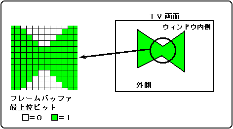
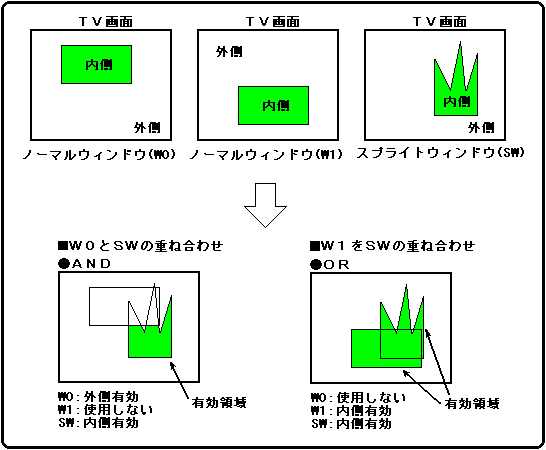

★
HARDWARE Manual★
VDP2ユーザーズマニュアル★
第８章 ウィンドウ
★
HARDWARE Manual★
VDP2ユーザーズマニュアル★
第８章 ウィンドウ
▲
戻る｜
進む▼
VDP2ユーザーズマニュアル/第８章 ウィンドウ
●スプライトウィンドウ
- スプライトウィンドウは、スプライトのフレームバッファデータがすべてパレット方式のデータで、かつスプライトタイプが2〜7の場合に、そのデータの最上位ビットの値を指定することで得られます。最上位ビットが1の領域が内側、それ以外の領域が外側です。スプライトタイプについては、「9.1 スプライトデータ」の「スプライトタイプ」を参照してください。スプライトウィンドウを図8.5に示します。
図8.5 スプライトウィンドウ

●スプライトコントロールレジスタ
- スプライトコントロールレジスタは、スプライトに関する制御をします。書き込み専用の16ビットのレジスタで、1800E0H番地にあります。電源投入後またはリセット後、値は0にクリアされますので必ず設定してください。
- SPCTL 1800E0H
- スプライトカラー演算条件ビット：Sprite color calculation condition bit
- (SPCCCS1, SPCCCS0)、ビット13、12
「9.2 プライオリティとカラー演算」を参照してください。
- スプライトカラー演算条件ナンバービット：Sprite color calculation condition number bit
- (SPCCN2〜SPCCN0)、ビット10〜8
「9.2 プライオリティとカラー演算」を参照してください。
- スプライトカラーモードビット：Sprite color mode bit (SPCLMD)、ビット5
- 「9.1 スプライトデータ」を参照してください。
- スプライトウィンドウイネーブルビット：SW enable bit (SPWINEN)、ビット4
- スプライトウィンドウSWを使用するかどうかを指定します。
| SPWINEN | 処 理 |
|---|
| 0 | スプライトウィンドウを使用しない |
|---|
| 1 | スプライトウィンドウを使用する |
|---|
- このビットは、スプライトカラーモードがモード0でなおかつスプライトタイプがタイプ2〜7の場合にのみ有効です。
このビットが1のときは、スプライトのフレームバッファの最上位ビットをスプライトウィンドウ用のビットとして使用するので、MSBシャドウは使えなくなります。シャドウについては、「14.1 シャドウ処理」を参照してください。
- SPCLMDビットを1に設定した場合は、このビットを1にしないでください。
- スプライトタイプビット：Sprite type bit (SPTYPE3〜SPTYPE0)、ビット3〜0
- 「9.1 スプライトデータ」を参照してください。
●画面に対するウィンドウ有効領域
- ノーマルウィンドウおよびスプライトウィンドウは、使用するかどうかを各スクロール画面ごとに指定することができます。使用するウィンドウは、ウィンドウごとに内側と外側のどちらの領域を有効にするかを指定でき、有効にした領域に対してカラー演算や透明処理を行います。複数のウィンドウを使用する場合は、その重ね合わせ方をANDまたはOR論理から選択することができます。
- ノーマルウィンドウとスプライトウィンドウをANDまたはOR論理で重ね合わせた場合の有効領域を図8.6に示します。
図8.6 ウィンドウの有効領域

▲
戻る｜
進む▼
★
HARDWARE Manual★
VDP2ユーザーズマニュアル★
第８章 ウィンドウ
Copyright SEGA ENTERPRISES, LTD., 1997